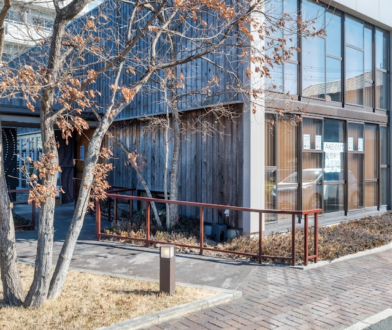
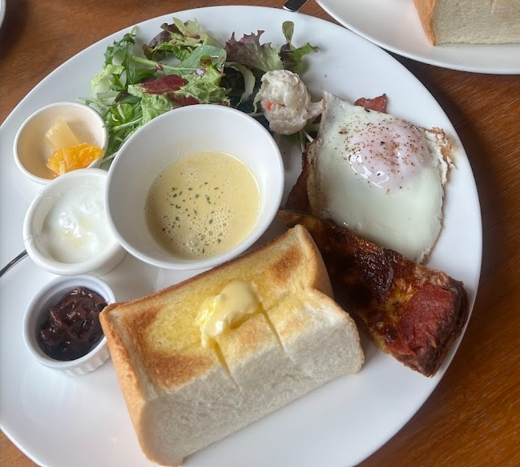
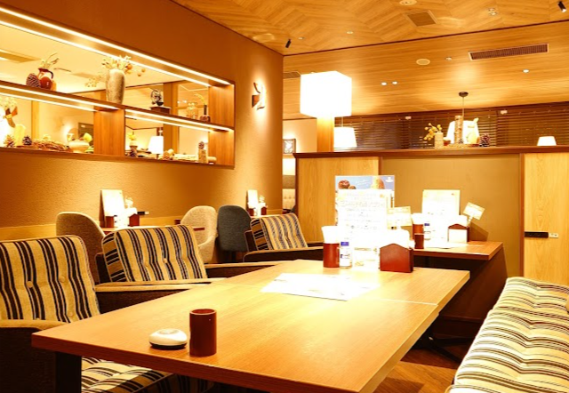
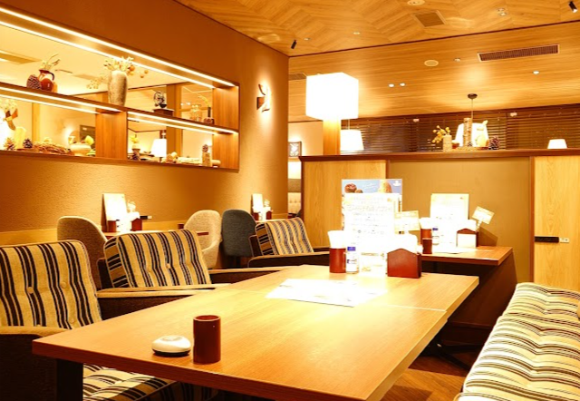

豊橋のディナーできるカフェ３選
豊橋のディナーできるカフェ 比較早見表
結果だけ知りたい方は表だけでOK！
豊橋のディナーできるカフェの料金・メニュー・ゆっくりできるかについて5段階評価で比較しました。
詳細は以下をご参照ください！
| カフェ名 | 料金 | メニュー | ゆっくりできるか |
|---|---|---|---|
| カフェサモワール | ★★★★★ | ★★★★☆ | ★★★★☆ |
| むさしの森珈琲 | ★★★★★ | ★★★★★ | ★★★★★ |
| しまうま珈琲Jr | ★★★★★ | ★★★★☆ | ★★★★★ |
豊橋のカフェ
１： カフェサモワール
 

料金: 1500円前後
詳細
豊橋の牟呂にあるおしゃれなカフェです。
夜の９時まで営業しており、ディナーにはパスタなどを楽しめます。
詳しいメニューはWebサイトをご確認ください！
２： むさしの森珈琲

 

料金: 1500円前後
詳細
ガストのすかいらーくグループの系列店です。
内装はおしゃれで落ち着いた雰囲気です。
ファミレスに似たファミリータイプの席もあるので、ファミリーにもおすすめです。
メニューは豊富で、ランチ、ディナーはそれぞれ1000円と少しで済みます。
ファミレスとカフェを合体させたような、そんな雰囲気があります。
夜10時まで営業しているのもうれしいですね。
３： しまうま珈琲Jr.
料金: 1500円前後
詳細
豊橋の幸公園近くにあるおしゃれなカフェです。
ディナーにはパスタなどを楽しめます。
夜１０時まで営業しているのは有難いですね。
詳しいメニューはWebサイトをご確認ください！
終わりに
以上、豊橋のディナーできるおすすめのカフェを５つご紹介しました。
紹介しきれなかったカフェが豊橋にはまだまだあります！
ぜひ、皆さんもお気に入りのカフェを探してみましょう！